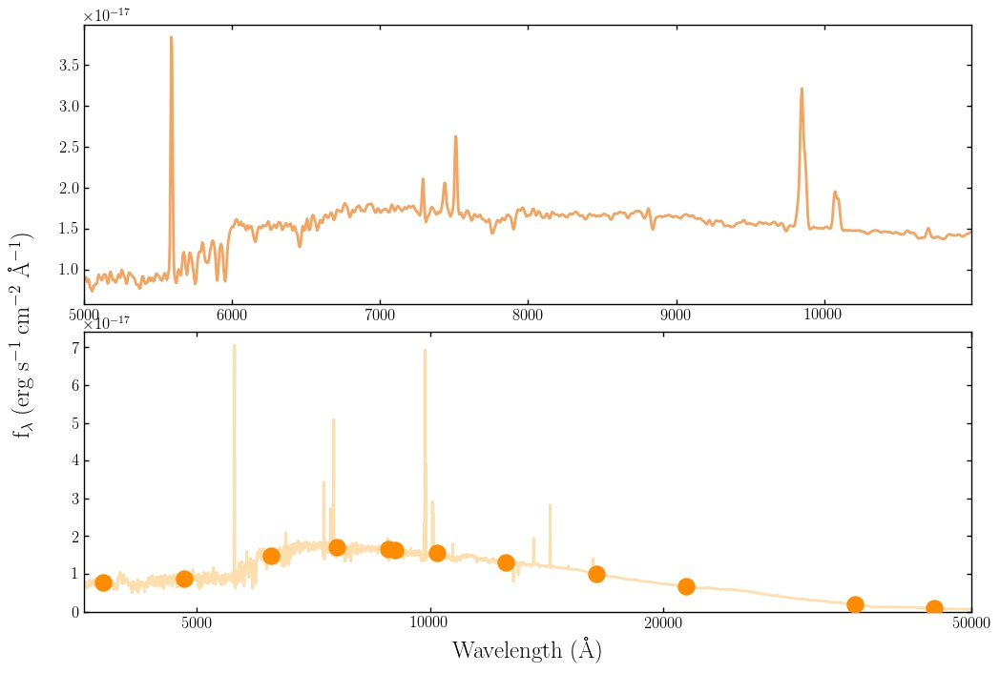

Obtaining model photometry: defining fields¶
Considerable effort has been put into making the process of dealing with filter curves in Bagpipes as painless as possible.
Bagpipes includes a concept called a “field”, which is a list of filter curves across which the model spectrum will be integrated to give photometric fluxes, e.g. the UltraVISTA field might contain the filter curves for the YJHK bands.
In the “bagpipes/filters” directory you will find a few example fields already set up.
In order to set up your own field:
- Get hold of some filter curves (I recommend the SVO filter profile service)
- Create a file in “bagpipes/filters” called <fieldname>_filtlist.txt and add the paths from this folder to your filter files to this file, one per line.
For example, if you wanted to generate model PanSTARRS photometry, you’d create a PanSTARRS field. You’d download the grizy filter curves and put them in, for example, the folder “bagpipes/filters/PS1”. You’d then create a file in “bagpipes/filters” called PanSTARRS_filtlist.txt which would contain:
PS1/PS1.g
PS1/PS1.r
PS1/PS1.i
PS1/PS1.z
PS1/PS1.y
You’re then all set to start generating photometry. All you need to do is specify the name of your field with the field keyworld argument of Model_Galaxy:
model = pipes.Model_Galaxy(model_comp, field="PanSTARRS")
If you want a spectrum too, you can keep the output_specwavs keyword argument as well. You can then access the model photometry, which is returned as a 1D array of flux values in the same order as the filters are listed in <fieldname>_filtlist.txt with:
print model.photometry
By default photometry is returned in erg/s/cm^2/A, but both the photometry and spectrum can be converted to microjanskys using the out_units keyword argument:
model = pipes.Model_Galaxy(model_comp, field="PanSTARRS", out_units="mujy")
Adding field=”uvista” to the example shown at the end of the previous page returns an additional panel on the output plot:
